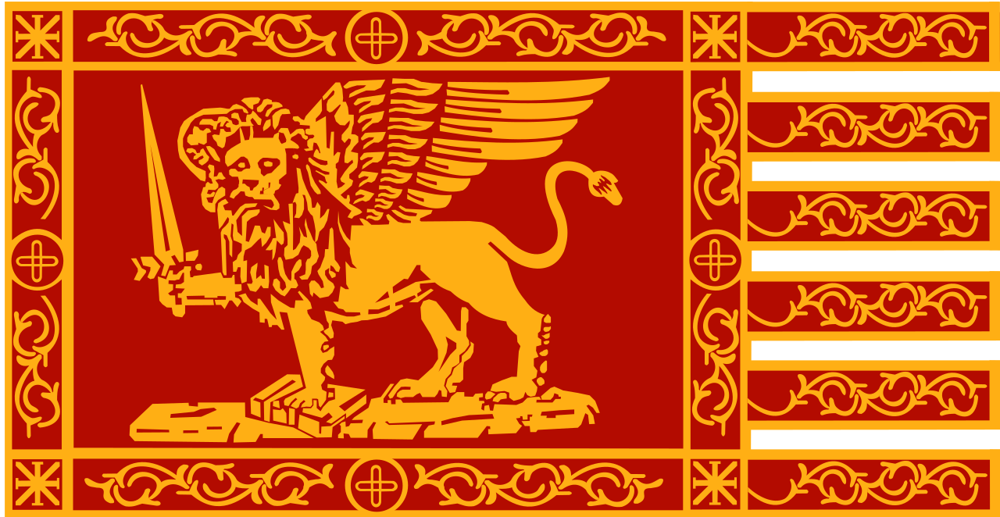

Chapel Bridge
Lucerne Switzerland 
Bosphorus Bridge
TURKEY
Tower Bridge
London England
Rialto bridge
Venice Italy 
Effile Tower
France paris
LONGEST BRIDGE
Millau Viaduct (France)
The bridge is located on the rail line between Shanghai and Nanjing in Jiangsu province. It is in the Yangtze River Delta where the geography is characterised by lowland rice paddies, canals, rivers, and lakes. The bridge runs roughly parallel to the Yangtze River, about 8 to 80 km (5 to 50 mi) south of the river
SEE MORE1915 Çanakkale Bridge (Turkey)
The Canakkale 1915 is a 3.7km suspension bridge being built over the Dardanelles Strait in the Canakkale province of Turkey. Located at the western end of the Marmara Sea, the bridge is expected to become the longest suspension bridge in the world, upon completion
SEE MORE
Pingtang Bridge (China)
The Pingtang Bridge is a bridge in Pingtang, Guizhou, China and carries the Pingtang Luodian Expressway over the deep Caodu River valley. With a height of 332 metres, it is the third-tallest bridge in the world. It was opened to traffic on 30 December 2019
SEE MORESMALLEST BRIDGE
Bratislava UFO(Bratislava, Slovakia)
Most SNP, commonly referred to as Most Slovenského národného povstania or the UFO Bridge, and named Nový most from 1993 to 2012, is a road bridge over the Danube in Bratislava, the capital of Slovakia. It is the world's longest bridge to have one pylon and one cable-stayed plane
SEE MOREA Ponte da Ajud (spain)
The bridge’s construction dates back to 1510 and as early as 1597 two of the central arches collapsed due to heavy flooding of the river. In 1641, it was repaired and raised platforms were installed to replace the damaged arches, but in 1646 the Castilian army destroyed the bridge
SEE MORE
Somerset Bridge(Bermuda)
Somerset Bridge is a small bridge in Bermuda connecting Somerset Island with the mainland in the western parish of Sandys, Somerset Bridge is reputedly the smallest working drawbridge in the world. It crosses a small channel connecting the Great Sound with Ely's Harbour
SEE MORETALLEST BRIDGE
Chenab Rail Bridge(jammu kashmir)
The Chenab Rail Bridge is a steel and concrete arch bridge between Bakkal and Kauri and just 42 km from main Reasi town in the Reasi district of Jammu and Kashmir, India. The bridge spans the Chenab River at a height of 359 m above the river, making it the world's highest rail bridge.
SEE MOREburj Khalifa (UAE)
The Burj Khalifa Tower), known as the Burj Dubai prior to its inauguration in 2010, is a skyscraper in Dubai, United Arab Emirates. It is known for being the world’s tallest building. With a total height of 829.8 m (2,722 ft, or just over half a mile) and a roof height (excluding antenna, but including a 223 m spire[2]) of 828 m (2,717 ft)
SEE MOREEiffel Tower(France paris).png)
The Eiffel Tower is a wrought-iron lattice tower on the Champ de Mars in Paris, France. It is named after the engineer Gustave Eiffel, whose company designed and built the tower. Locally nicknamed "La dame de fer", it was constructed from 1887 to 1889 as the centerpiece of the 1889 World's Fair the hight of effil tower is almost 1,083 feet
SEE MOREOLDEST BRIDGE
.jpg)
Tarr Steps(England)
The Tarr Steps is a clapper bridge across the River Barle in the Exmoor National Park, Somerset, England.[1] They are located in a national nature reserve about 2.5 miles (4 km) south east of Withypool and 4 miles (6 km) north west of Dulverton. A typical clapper bridge construction, the bridge's listing assesses it as medieval in origin. The stone slabs weigh up to two tons each. The bridge is 180 feet (55 m) long and has 17 spans.[2] It has been designated by English Heritage as a grade I listed building and scheduled monument.
SEE MORE.jpg)
Bridge near Limyra(Turkey)
The Bridge near Limyra is a relatively unknown, yet unique stone bridge it is believed to be one of the oldest segmented arch bridges in the world. The bridge is located near the ancient city of Limyra and is the largest civil engineering structure of antiquity in the region.
SEE MOREArkadiko Bridge
The Arkadiko Bridge or Kazarma Bridge is a Mycenaean bridge near the modern road from Tiryns to Epidauros on the Peloponnese, Greece. Dating to the Greek Bronze Age, it is one of the oldest arch bridges still in existence and use today and the oldest preserved bridge in Europe.
SEE MORE